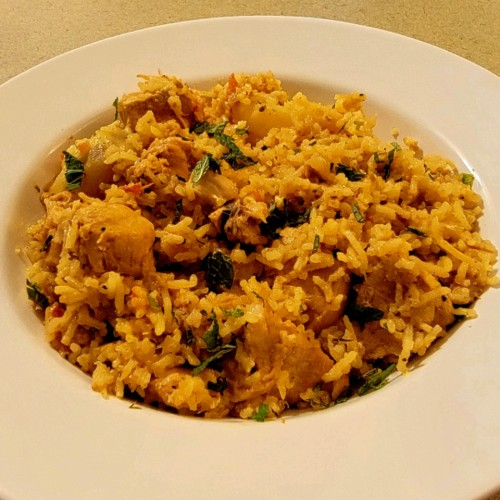

Biryani

Chicken Biryani
This is a delicious Pakistani/Indian rice dish
which is often reserved for very special occasions
such as weddings, parties, or holidays such as Ramadan.
It has a lengthy preparation, but the work is definitely
worth it. For biryani, always use long grain rice.
Basmati rice with its thin, fine grains is the ideal
variety to use. Ghee is butter that has been slowly
melted so that the milk solids and golden liquid have
been separated and can be used in place of vegetable
oil to yield a more authentic taste.
Ingredients
-
Chicken:
- 4 tablespoons vegetable oil, divided
- 4 small potatoes, peeled and halved
- 2 large onions, finely chopped
- 2 cloves garlic, minced
- 1 tablespoon minced fresh ginger root
- ½ teaspoon chili powder
- ½ teaspoon ground black pepper
- ½ teaspoon ground tumeric
- 1 teaspoon ground cumin
- 1 teaspoon salt
- 2 medium tomatoes, peeled and chopped
- 2 tablespoons plain yogurt
- 2 tablespoons chopped fresh mint leaves
- ½ teaspoon ground cardamom
- 1(2 inch) piece cinnamon stick
- 3 pounds boneless, skinless chicken pieces cut into chunks
-
Rice:
- 1 pound basmati rice
- 2 tablespoons vegetable oil
- 1 large onion, diced
- 1 pinch powdered saffron
- 5 pods cardamom
- 3 whole cloves
- 1(1 inch) piece cinnamon stick
- ½ teaspoon ground ginger
- 4 cups chicken stock
- 1 teaspoon salt
Steps
- Heat 2 tablespoons oil in a large skillet. Fry potatoes in hot oil until brown. Remove to a paper towel-lined plate to drain and set aside.
- Add remaining 2 tablespoons oil to the skillet and fry onions, garlic, and fresh ginger until onion is soft and golden. Add chili, pepper, turmeric, cumin, salt, and tomatoes. Fry, stirring constantly, for 5 minutes. Stir in yogurt, mint, ground cardamom, and cinnamon stick. Cover and cook over low heat, stirring occasionally, until the tomatoes are cooked to a pulp. It may be necessary to add a little hot water if the mixture becomes too dry and starts to stick to the pan.
- When mixture is thick and smooth, add chicken and stir well to coat. Cover and cook over very low heat until chicken is tender, 35 to 45 minutes. There should only be a little very thick gravy left when the chicken is finished cooking. If necessary cook uncovered for a few minutes to reduce the gravy.
- To prepare rice: Wash rice well and drain in colander for at least 30 minutes.
- Heat oil in a large skillet. Fry onion in hot oil until golden. Add saffron, cardamom pods, cloves, cinnamon stick, ground ginger, and rice. Stir continuously until rice is coated with spices.
- Heat stock and salt in a medium pot. When the mixture is hot, pour it over the rice and stir well. Add the chicken mixture and potatoes; gently mix them into the rice. Bring to boil. Cover the saucepan tightly, turn heat to very low, and steam for 20 minutes. Do not lift lid or stir while cooking. Spoon biryani onto a warm serving dish.